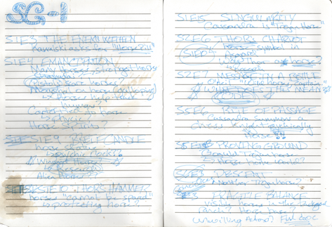
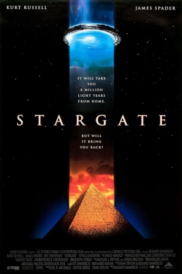

|
|
|
|
|
|
|
|
|
|
|
006000
since 1998


Of all the PSYOPs initiated by the United States government, few have been as successful as the Stargate Project.
I understand the need for secrecy. Any good government must lie to its citizens from time to time. However, this secret is putting the entire world at risk, and I’m starting to suspect the horse menace is involved.
Everyone knows about the Stargate Project, the classified training and deployment of psychics for military purposes. The program was transferred back to the CIA in the 90s and, after a brief ownership by the DIA, subsequently “terminated” and “declassified” after a commissioned review concluded it was never useful in any intelligence operation in 1995. Over twenty years later in January 2017, the government published the “complete” Stargate Project files, further cementing their false narrative.
That expert lie was simply the final move in one of the most precise and elaborate psychic operations in world history. To understand, we must go back to the inception of military psychic research in America.
Suspicious Soviets?
It’s common knowledge that the CIA, among other organizations, have a long-standing working relationships with demons, but I wonder whether they are psychic at all. If they were, wouldn’t they be controlling the government? Wouldn’t our taxes be paid in blood or some other sufficiently demonic tithe? The theory reads almost too clean, to my eyes.
Of all the possibilities, one theory has caught my attention.
“Horses,” says Susan Hipchance. “It’s clear as day.”

She’s admiring an SR-71 as we walk through Edwards Airforce Base in Edwards, CA.
“Most people think these planes were the most impressive advancement in espionage during the Cold War, but they’re dead wrong,” she continues. “The Cold War wasn’t even about humans, really. But that’s not the damning evidence – that comes straight from Hollywood.”
Susan had a good laugh when I asked if she was referring to a documentary. “No. Have you ever seen the Stargate series?”
I hadn’t, but this news was so shocking that I now own every DVD box set and movie.

As we walked from under the beating summer sun and into the small welcome area, she pulled a notebook from her tote bag. Cream colored and marked with a serif “M” on the front, it looked like something my daughter might buy from the bookstore.
“Watch the show. Confirm my records. It’s obvious.” She placed the book into my hands with absurd care. It was warm. “You can keep this copy.”
I wanted to go over the evidence with Susan, maybe watch some of the series together so she could show me what she had seen. She was also great company with a good sense of humor and, supposedly, a county-record holding oatmeal cookie recipe that I couldn’t coax from her. Unfortunately, she had a dentist’s appointment.
Still, I was grateful for the book, which was filled with meticulous, handwritten notes. It turns out, while helpful as a secondary source, the notebook wasn’t necessary.
The Stargate-Stargate Connection
At first glance, the movie Stargate starring Kurt Russel and James Spader has little to do with the Stargate Project in any of its incarnations. The plot involved ancient alien technology called “stargates” which had been seeded across the galaxy. By dialing a code into one stargate, you can travel to another – like an intergalactic rotary phone.

Psychics are present throughout the movie and series as is a common tactic for Hollywood to discredit proven fact, but more concerning is the ominous presence of horses.
Dr. Daniel Jackson, James Spader’s expertly played scientist, feeds, becomes entangled with, and is dragged across the desert by a creature called the Mastadge. The spelling of the name alone is quite damning (only a few letters away from Mustang), but the production details really nail in the horseshoes.
The Mastadge creature may not have been written as a horse, but a crew of horses starred in the role. Behind the scenes footage and documentary interviews with the film crew make it sound as though these were simple beasts of burden, but how, then, could they learn to operate the animatronic headpieces?
Because they invented them.
Humans have mastered smelting and forging, but horse kind is more than capable of creating simple yet powerful psychic accoutrement, including helmets.
I believe these horses were operatives, among many others (both human and otherwise) who were present on set, which guided the entire Stargate franchise. From projecting the idea into the mind of then college student Roland Emmerich in 1979, to psychically enhancing the capabilities of the production team to ensure the franchise’s success – horses have been present every step of the way. The operation was barely completed in time, but the movie released October 28, 1994, less than a year before the Stargate Project was set to go underground.
Why go through all this effort? It’s obvious. This masterful operation was orchestrated by the horse menace to distract us from the truth – we are all psychic!
Stargate Survivors
Horses want to keep our psychic nature from us and it’s working. The successful obfuscation of the truth of the Stargate Project is only the tip of the iceberg. Horse kind has been feeding lies to government organizations for years, and only a few elite minds have ascended beyond their control.
Those few powerful psychics who were part of the Stargate Program are mostly living solitary, quiet lives. Many are difficult or impossible to contact. Some, however, are powerful enough to speak publicly without retribution from agencies or horses. I believe this is due to the supreme confidence of these organizations in their success of discrediting psychic capabilities.
These brave psychics continue their diligent work under the mission they committed to, even if it never existed.
I needed to find these people if I wanted to learn the full picture. By using the natural psychic energy deposit in the crook of my left elbow (sleeve rolled up to expose my skin to the air), I was able to contact Sergeant Major (Sgt Maj) Arnold Peahat (obviously this is a fake name to protect him and his surviving family).
“Any human can astral project. It’s an evolutionary development, same as horses,” the Sgt Maj implied using mental projection from his safe haven somewhere on earth. “The problem is the world is so noisy. A lot of that is on purpose, like Gondola Wish.”
He used the original codename for the Stargate Project since he was one of the first assets on the team. I asked him how he learned the truth.
“Have you had one of those dreams where you can feel someone behind you but whenever you turn around they aren’t there? Well, when I turned around there was someone there. A horse with eyes so black they glittered in the void of my mind.”
I felt a chill through our connection and gave the Sgt Maj a moment to collect himself.
“We all had mandatory therapy sessions back then. Everyone was afraid the Soviets would make us crazy and turn our brains into nuclear bombs or something. I told Dr. Shocks about my dream and each time he said the horse was my spirit animal. I shudder to think what that evil equine did in my brain over those twenty years it took me to learn the truth.”
I didn’t tell him, but I’ve had the same dream since I was a child. My parents, pediatric dietician, and even my current therapist all tell me that same lie – spirit animal – but I know better. A horse is watching me, but that’s its mistake.
Now I know I’m on to something.
Don’t worry reader, I protect myself with a small bell on my bedside table and sleep in a basement with two dozen stairs between me and the entrance. No horse will stop me from delivering the truth.
You are psychic! Don’t be trampled!
|
Return to Reports List [ Return to Homepage ] |